帧来源raw_world
响应combined_depth_ir_darkline
线族[8, 8]
推荐方案completed_surface_intersections
推荐点数64
全流程耗时1763.7 ms
结论
本轮优先走“补全钢筋面后直接检测交点”的技术路径；梁筋本体点仍用 beam_candidate 排除。
展示图的 IR 底图已提高伽马：ir_display_gamma=1.95。红色是 beam_candidate 梁筋本体，黄色是梁筋 ±13cm 排除带，绿色/白色是普通钢筋候选和骨架。
补全面路径：原始 surface_segmentation 可能缺线，所以先用 line support 补成 completed_surface_mask，再从补全面重建行列线族并直接求交点。
绑扎点方案对比
| 方案 | 名称 | 点数 | 均值响应 | 说明 |
|---|---|---|---|---|
pr_fprg_all |
PR-FPRG 全部交点 | 64 | 0.553 | 不做梁筋过滤，用作当前方案 1 对照。 |
legacy_edge_band_13cm |
旧 edge-band ±13cm | 48 | 0.628 | 旧梁筋 edge-band mask 的保守排除；本帧只抓到左侧梁筋。 |
beam_candidate_direct |
新 beam_candidate 本体 | 64 | 0.553 | 只去掉落在梁筋本体膨胀 mask 上的绑扎点，保留梁筋附近普通钢筋交点。 |
beam_candidate_13cm |
新 beam_candidate ±13cm | 64 | 0.553 | 按梁筋左右 ±13cm 做图谱排除，更保守，但会少保留梁筋附近交点。 |
completed_surface_intersections |
补全钢筋面交点 | 64 | 0.668 | 先补全钢筋面，再从补全面重建行/列线族并直接求交点；这是本轮推荐技术路径。 |
instance_graph_junctions |
instance_graph 骨架交叉点 | 85 | 0.960 | 不依赖理论网格交点，直接从骨架 junction 聚类取点；当前作为探索对照。 |
03_surface_greedy_curve |
03 补全面 greedy 曲线 | 64 | 0.901 | 以补全钢筋面作为底图，沿补全后的线族拓扑做局部 ridge 贪心曲线，再求曲线交点。 |
04_surface_dp_curve |
04 补全面 DP 曲线 | 64 | 0.947 | 以补全钢筋面作为底图，动态规划约束相邻采样点偏移连续。 |
05_surface_ridge_curve |
05 补全面 ridge 曲线 | 64 | 0.964 | 以补全钢筋面作为底图，动态规划分数加入中间强、两侧弱的 ridge 判断。 |
06_surface_ir_assisted_curve |
06 组合响应辅助曲线 | 64 | 0.959 | 以组合响应、Frangi-like、补全面共同形成的多模态底图做曲线收束。 |
效果图
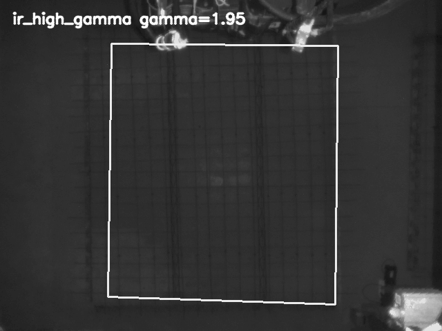
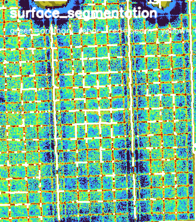
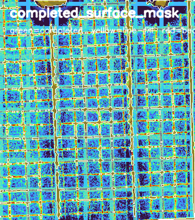
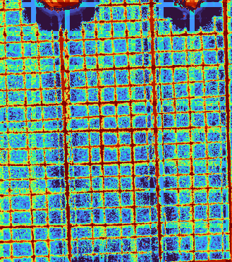
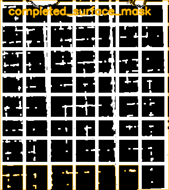
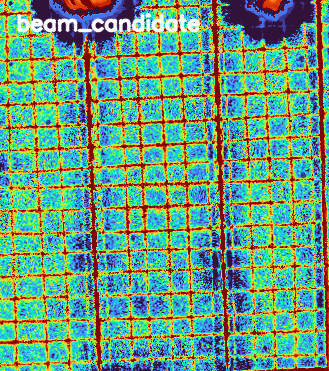
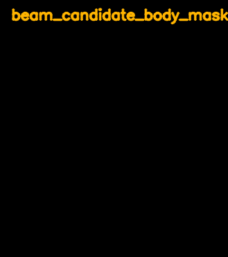
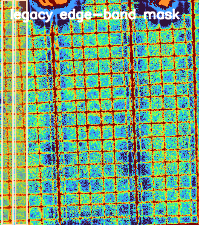
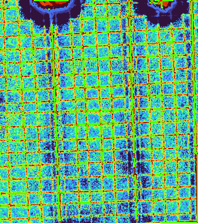
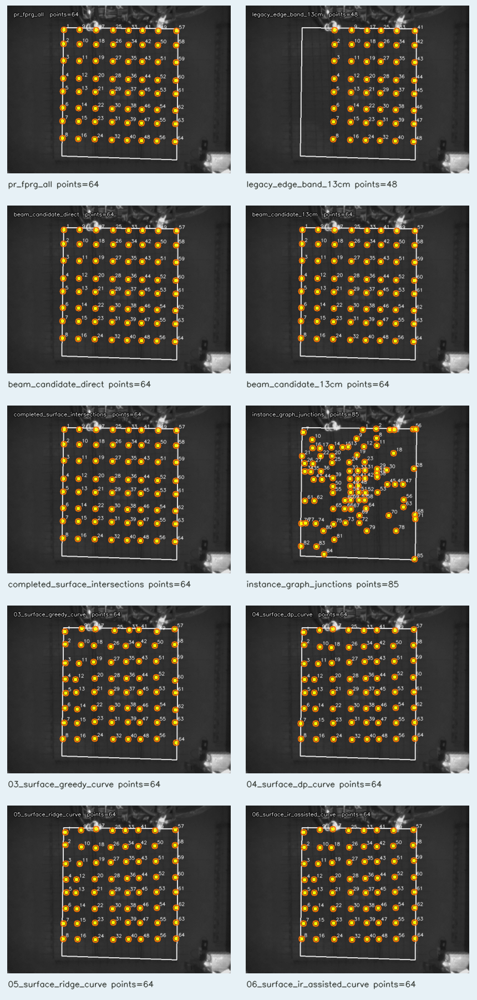
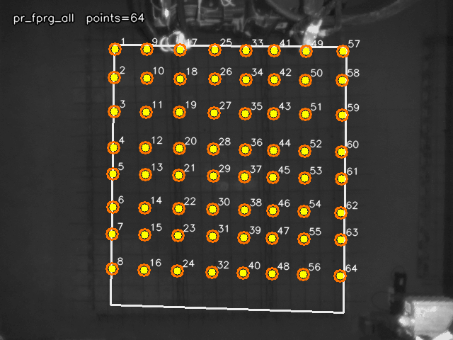
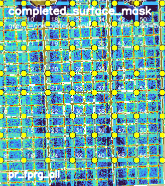
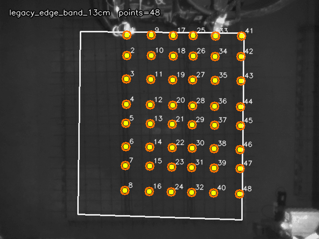
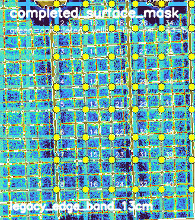
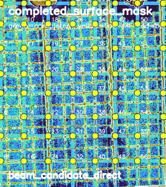
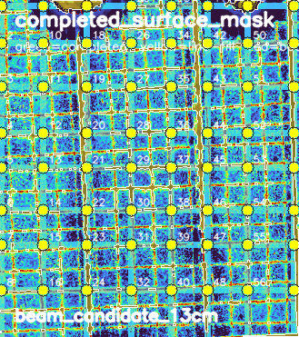
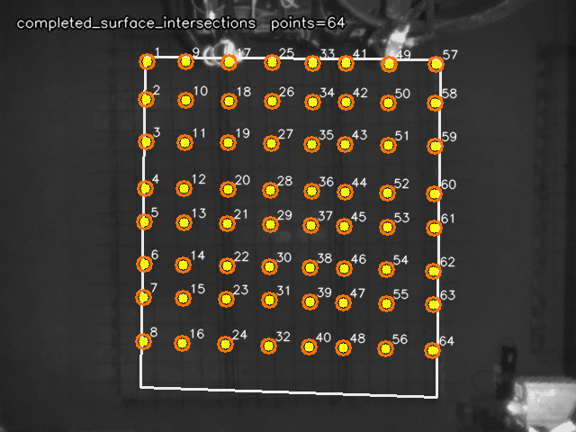
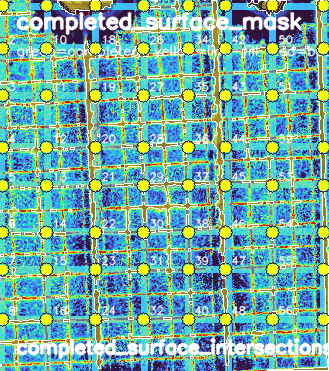
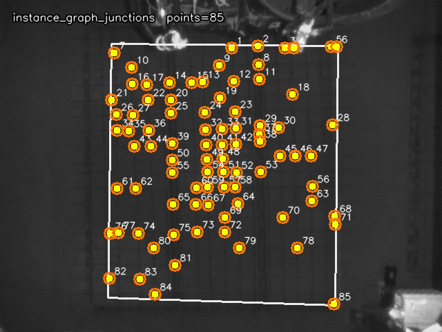
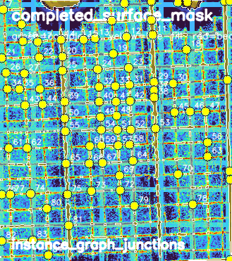
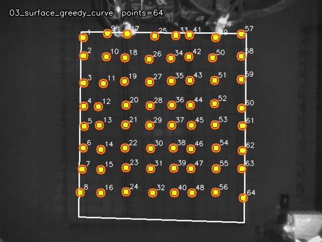
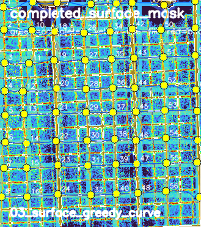
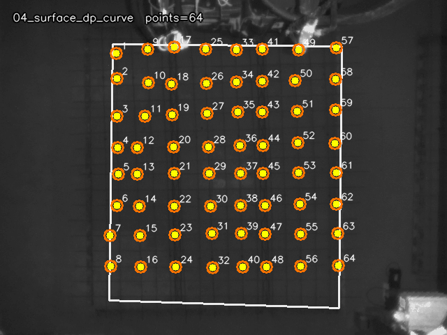
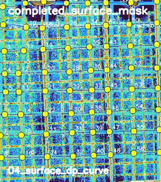
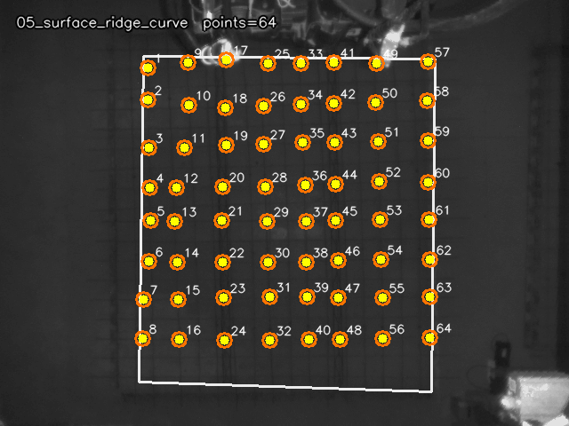
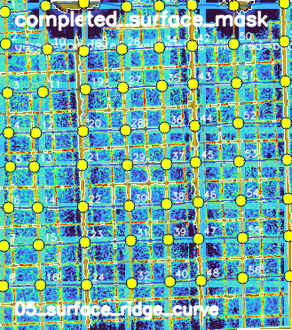
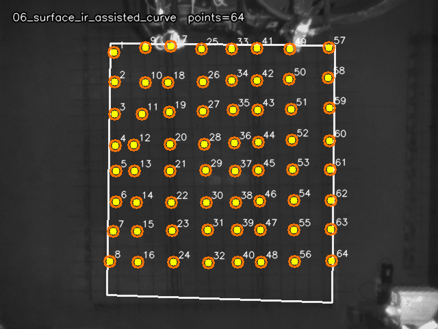
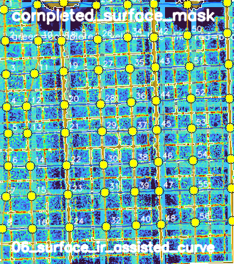